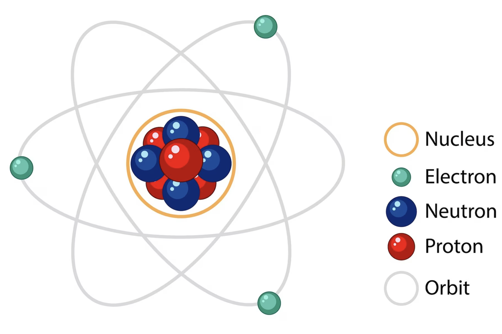

Mengenal Partikel dan Notasi Atom
Azzahra, 1 Jun 2025 — 08:55 am

Perhatikan sekeliling kalian, matahari terbit dari timur di pagi hari, bulan muncul pada malam hari... Wow apa tuh bilangan kuantum?
Elektron-elektron tersebar di sekeliling atom dengan teratur berdasarkan tingkat energinya. Nah, tingkat energi inilah yang digambarkan dengan bilangan kuantum...
Salah satu contoh atom di alam semesta ini adalah atom karbon. Atom karbon adalah penyusun dari berbagai benda yang sangat berguna...
Partikel Dasar Penyusun Atom dan Lambang Atom
Partikel dasar penyusun atom ada tiga yaitu proton (p), neutron (n) dan elektron (e)...
massa atom = massa p + massa n
| Partikel | Lambang | Massa(g) | Muatan | Coulomb |
|---|---|---|---|---|
| proton | p | 1.673 x 10-24 | +1 | +1.6 x 10-19 |
| neutron | n | 1.675 x 10-24 | 0 | 0 |
| elektron | e | 9.109 x 10-28 | -1 | -1.6 x 10-19 |
b
c
a
X
a nomor atom
b nomor massa
c bilangan oksidasi
Bagikan artikel ini